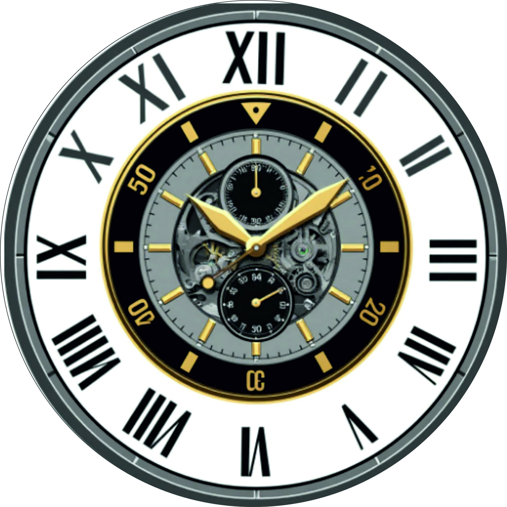
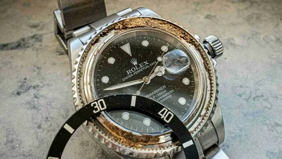
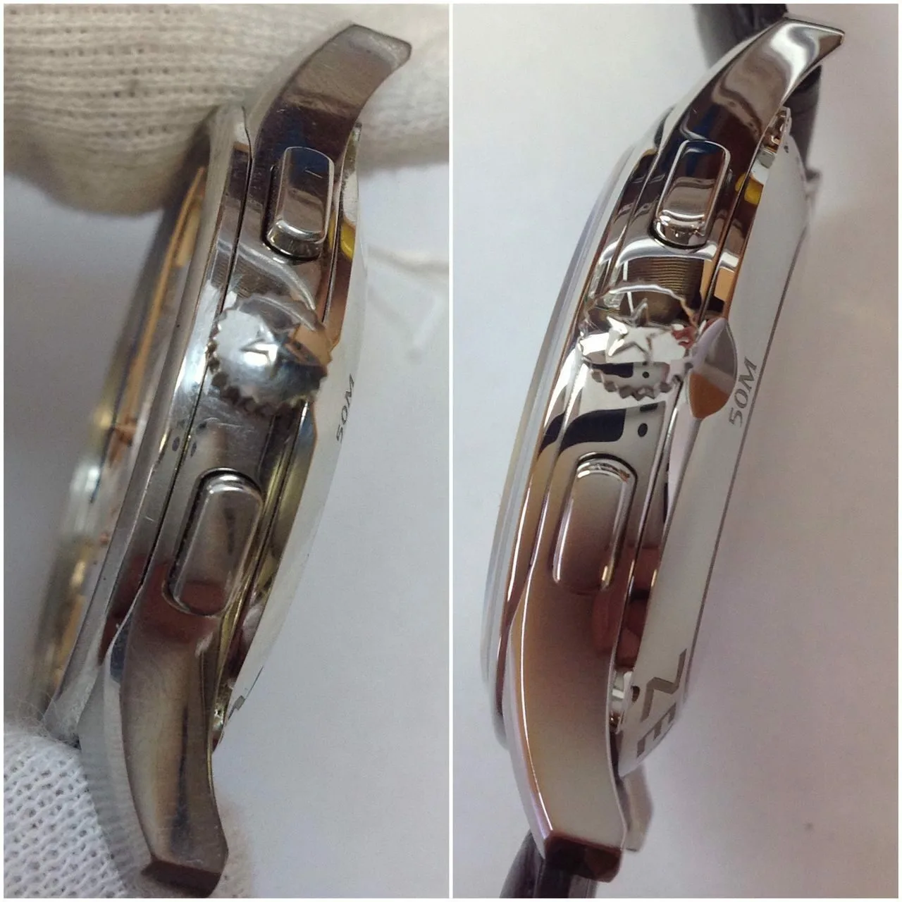
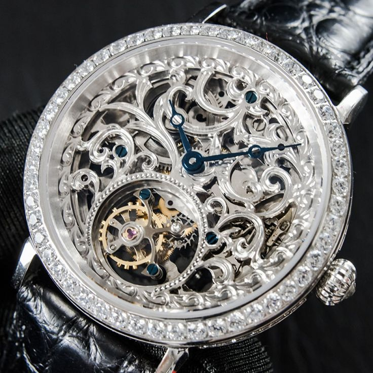
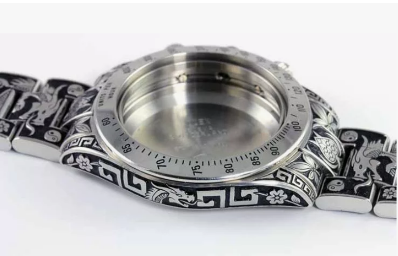
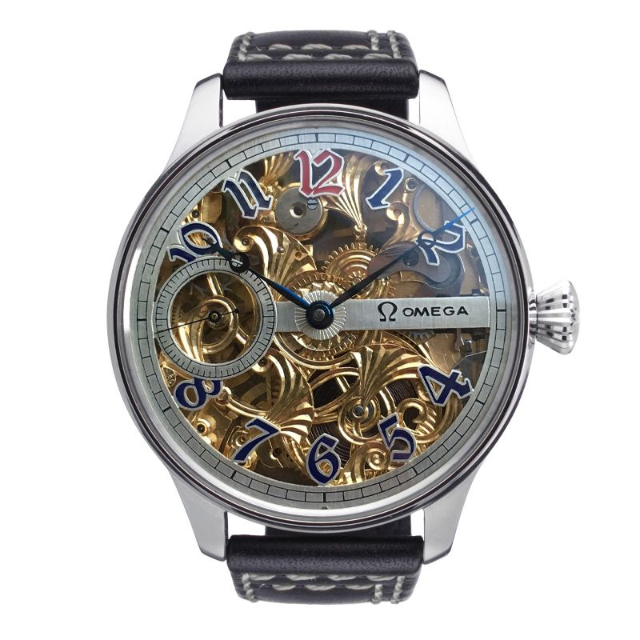
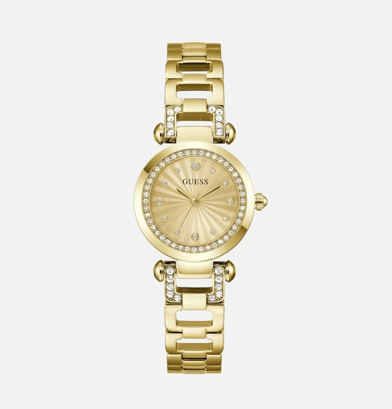
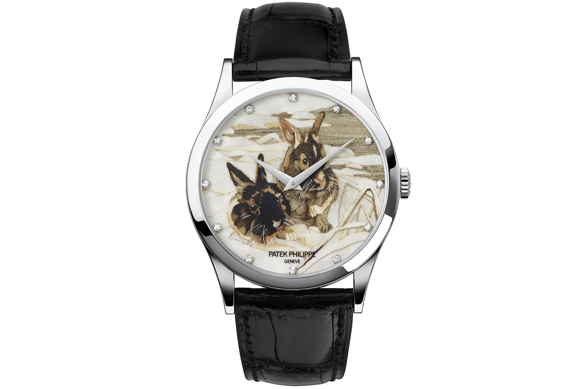

Как продлить жизнь механических часов
Чтобы механические часы вам служили всю жизнь...
Читать →Диагностика за 15 минут, 12 месяцев гарантии, оригинальные комплектующие. Доверьте свои часы сертифицированным мастерам.
Записаться на консультацию →
Мы объединяем экспертную диагностику, редкие механизмы и безупречный сервис. Работаем с коллекционными моделями, премиум-брендами и smart-часами. Каждый ремонт — это диалог с механизмом.

Член гильдии часовщиков России, стаж более 22 лет. Специализируется на механизмах Patek Philippe, Rolex, Omega и сложных хронографах. Лично контролирует каждый этап реставрации и кастомизации.
«Часы — это продолжение человека. Я возвращаю им точность и характер».

850 000₽

620 000₽

24 900₽

79 990₽
15 минут, точный вердикт и смета
Кварцевые, автоматические, хронографы
Восстановление корпуса и стекла
Индивидуальный дизайн, гравировка, циферблаты
Оставьте заявку или позвоните
15 мин, фотоотчёт, согласование
Оригинальные детали, контроль качества
12 месяцев + подарок




| Знак зодиака | Рекомендуемые модели | Стиль механизма |
|---|---|---|
| ♈ Овен | Omega Constellation, Rolex Daytona | Спортивные, агрессивные |
| ♉ Телец | Audemars Piguet Royal Oak, Patek Philippe Calatrava | Элегантные, роскошные |
| ♊ Близнецы | Jaeger-LeCoultre Reverso, Cartier Santos | Универсальные, трансформеры |
| ♋ Рак | Cartier Tank, Vacheron Constantin Patrimony | Сентиментальные, винтажные |
| ♌ Лев | Piaget Altiplano, Audemars Piguet Royal Oak | Статусные, дерзкие |
| ♍ Дева | Grand Seiko Elegance, Rolex | Минималистичные, строгие |
| ♎ Весы | Breguet Classique Tourbillon, Cartier Tank | Изысканные, гармоничные |
| ♏ Скорпион | Hublot Big Bang Unico, Omega Seamaster | Загадочные, скелетонированные |
| ♐ Стрелец | Omega Seamaster Planet Ocean | Приключенческие, GMT‑туристические |
| ♑ Козерог | A. Lange & Söhne Lange 1, Cartier Tank | Классические, деловые |
| ♒ Водолей | Hublot, Apple Watch | Инновационные, футуристичные |
| ♓ Рыбы | Blancpain Fifty Fathoms, Van Cleef & Arpels (лунные фазы) | Артистичные, морские |
* Индивидуальная консультация для выбора идеальной пары

Гравировка корпуса

Открытый механизм

Напыление золотом

Уникальный циферблат
Чтобы механические часы вам служили всю жизнь...
Читать →Наручные часы — это стильно и удобно. Но что делать, если в них села батарейка...
Читать →Механизм часов – сложная и хрупкая система, а попадание воды губительно для часов...
Читать →| Услуга | Цена (от ₽) | Срок |
|---|---|---|
| Диагностика часов | бесплатно* | 15 мин |
| Замена батарейки | 1 500 | 30 мин |
| Ремонт кварцевого механизма | 3 500 | 2-3 дня |
| Ремонт автоматического механизма | 7 500 | 5-7 дней |
| Полировка / удаление царапин | 2 900 | 1-2 дня |
| Кастомизация (гравировка, циферблат) | от 5 000 | от 5 дней |
* бесплатная диагностика при последующем ремонте
📍 Смоленск, ул. 25 Сентября, ТЦ «Макси»
📞 +7 (495) 999-00-11
✉️ info@watchmaster.ru
⏰ Ежедневно 10:00 – 20:00